| n=1 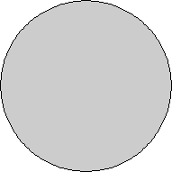 r = 1 Trivial. | n=3 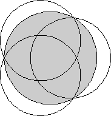 r = 2 / √3 = 1.154+ Trivial. | n=4 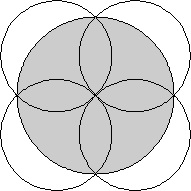 r = √2 = 1.414+ Trivial. | n=5 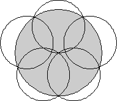 r = 1.641+ Proved by Károly Bezdek in 1983. |
| n=6 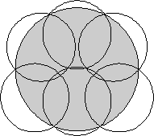 r = 1.798+ Proved by Károly Bezdek in 1979. | n=7 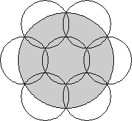 r = 2 Trivial. | n=8 r = 2.246+ Proved by Gábor Fejes Tóth in 1996. | n=9 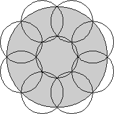 r = √2 + 1 = 2.414+ Proved by Gábor Fejes Tóth in 1996. |
| n=10 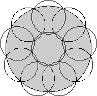 r = 2.532+ Proved by Gábor Fejes Tóth in 2005. | n=11 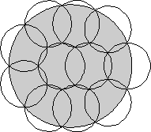 r = 2.631+ Found by Hans Melissen in 1997. | n=12 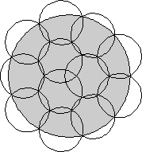 r = 2.769+ Found by Hans Melissen in 1997. | n=13 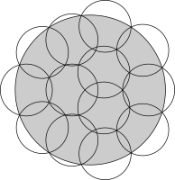 r = 2.884+ Found by Jeremy Tan in 2018. |
| n=14 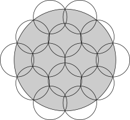 r = 3.014+ Found by Jeremy Tan in 2018. | n=15 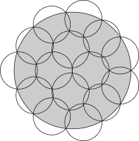 r = 3.143+ Found by Jeremy Tan in 2018. | n=16 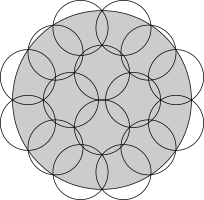 r = 3.244+ Found by Jeremy Tan in 2018. | n=17 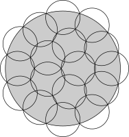 r = 3.349+ Found by Jeremy Tan in 2018. |
| n=18 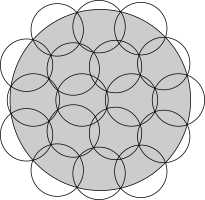 r = 3.446+ Found by Jeremy Tan in 2018. | n=19 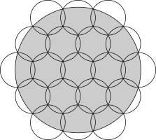 r = √13 = 3.605+ Found by Jeremy Tan in 2018. | n=20 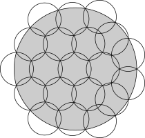 r = 3.692+ Found by Jeremy Tan in 2018. | n=21 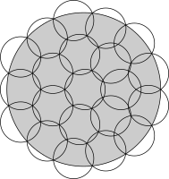 r = 3.804+ Found by Jeremy Tan in 2018. |
| n=22 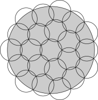 r = 3.948+ Found by Jeremy Tan in 2018. | n=23 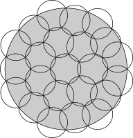 r = 4.000+ Found by Jeremy Tan in 2018. | n=24 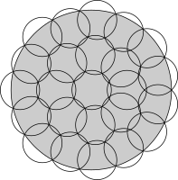 r = 4.076+ Found by Jeremy Tan in 2018. | n=25 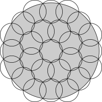 r = √6 + √3 = 4.181+ Found by Jeremy Tan in 2018. |